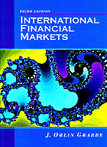

Preface
Reader's Introduction
PART I: HISTORY OF THE INTERNATIONAL FINANCIAL SYSTEM, 1944-2000
1 The Rise and Fall of Bretton Woods
2 Globalization and the Growth of Derivatives
3 The Crash of '94-'96 and Beyond
PART II: FOREIGN EXCHANGE MARKETS
4 Introduction to the Foreign Exchange Market
5 Forwards, Swaps, and Interest Parity
6 Foreign Currency Futures
7 Foreign Currency Options
PART III: EUROCURRENCY MARKETS
8 Eurobanking and Eurocurrency Centers
9 Deposit Dealing and the Term Structure of Eurocurrency Rates
10 Eurocurrency Futures and Options
11 Syndicated Eurocredits
PART IV: INTERNATIONAL BOND MARKETS
12 Introduction to the International Bond Markets
13 New Issue Procedures in the Eurobond Market
14 Eurobond Valuation and Hedging
15 Interest Rate and Currency Swaps
16 Pricing Option Features in International Bonds
PART V: SELECTED TOPICS IN INTERNATIONAL FINANCE
17 Forecasting and the Image of the Future
18 Chaos in International Financial Markets
19 The Fractal Distribution of Foreign Exchange
and Interest Rates
20 Purchasing Power Parity
21 Central Banks and the Balance of Payments
22 The European Monetary System
"This is the best text I have seen in international finance. Good work."
Stephen P. Magee, Department of Finance, University of Texas.
"Grabbe had taught several 'Market Wizards' to trade currencies--and this is the book they recommend for understanding currency fundamentals."
Dr. Alexander Elder, Director, Financial Trading Seminars.
"This is an original and insightful presentation of material that is often ignored or badly treated in other books."
Richard J. Herring, Director, Wharton Program in International Banking and Finance.
"An exceptionally well-written book with detailed coverage of the financial markets in the international scene."
Rahul Bishnoi, Department of Finance, University of Wisconsin.
". . . too much detail on markets."
[Name Omitted], Tufts University.
"Excellent book . . . teaches students about actual markets and financial instruments..."
J. A. Rosensweig, Yale University.
". . . an excellent and lucid analysis of the functioning of the international money market."
C. Lawrence, Columbia University.
"Last year I found your book in the Beijing Library (the National Library of China) and had it xeroxed. . . Now I am cooperating with one of my friends to translate it into Chinese . . . China
is trying very hard to apply the market mechanism to her economy."
Zhang Bin, Industrial & Commercial Bank of China.
"By far the best book available. Well-written, up-to-date & accessible . . ."
Asim Erdilek, Case Western University.
"This is an excellent, challenging, well-written book."
E. B. Fredrikson, School of Management, Syracuse University.
You may also purchase International Financial Markets, 3rd edition by credit card over the phone from Prentice Hall. Call 1-800-223-1360 during office hours, and follow the automated numbering system (the end result of which is a real person who takes your credit card number). Otherwise, you can ask them to bill you.
You will need the following information:
TITLE: International Financial Markets, 3rd edition
AUTHOR: J. Orlin Grabbe
ISBN 0-13-206988-1.